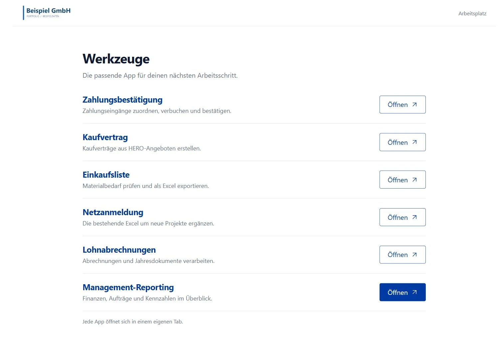
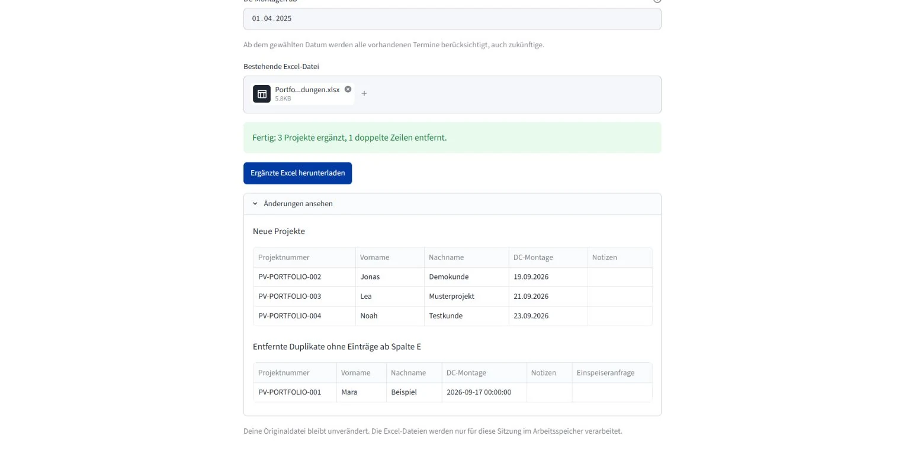

Apps & Automationen
Sechs Fachanwendungen für Office und Unternehmenssteuerung
Sechs Fachanwendungen bereiten Verträge, Materiallisten, Zahlungen, Personalunterlagen, Netzanmeldungen und Managementkennzahlen auf. Ein gemeinsamer Anwendungsstarter bündelt die Zugänge für Office, Einkauf, Personal und Geschäftsführung.
Weniger Suchen und Übertragen: Vorhandene Daten führen durch Auswahl, Prüfung und Ausgabe; Klärfälle bleiben gezielt bearbeitbar.

Aus Geschäftsdaten werden bearbeitbare Vorgänge
Die Grafik lässt sich auf kleinen Bildschirmen seitlich verschieben.
Ein Einstieg für sechs Arbeitsabläufe
Die Startseite übernimmt das Öffnen und Wiederfinden laufender Apps. Die fachliche Aktualisierung erfolgt in der jeweiligen Anwendung. Das Paket enthält gemeinsamen Code und vorbereitete ERP-, Bank-, Personal- und Reportingbestände; Zugangsdaten und Einstellungen werden pro Rechner eingerichtet.
Der Fachprozess bestimmt die Aktualisierung
| Anwendung | Daten und Aktualisierung | Prüfung und Ergebnis |
|---|---|---|
| Management-Reporting | Lokaler Anfangsbestand; danach Bank und ERP vollständig aktualisieren. Nur Bank aktualisieren ist bei tagesaktuellem ERP-Stand möglich. | Ein neuer Lauf wird nach bestandenen Prüfungen aktiv. Managementkennzahlen und Szenarien behalten Quellen- und Regelbezug. |
| Zahlungsbestätigung | Bankeingänge parallel zum inkrementellen ERP-Abgleich laden; bearbeitete Transaktionen am Archiv erkennen. | Zuordnung und Restbetrag prüfen, dann Buchung und Bestätigung ausführen. Archiv und Journal halten den Abschluss fest. |
| Kaufvertrag | ERP-Daten bei Bedarf aktualisieren; Angebots-PDF gezielt abrufen. Die Formularvorlage bleibt lokal hinterlegt. | Pflichtangaben und PDF-Felder prüfen. Vertrag speichern und zur fachlichen Endkontrolle bereitstellen. |
| Einkaufsliste | Direkter lesender Abruf je Lauf. Zeitraum, Montagearten und gepflegte Ausschlüsse bestimmen die Auswahl. | Mehrfachtermine und Angebotsauswahl prüfen; Materialbedarf mit nachvollziehbaren Verarbeitungsstufen als Excel ausgeben. |
| Netzanmeldung | Excel-Upload löst die Aktualisierung von Terminen, Projekten und Kontakten aus. | Neue Projekte ergänzen und bearbeitete Zeilen erhalten. Ergebnis bleibt bis zum Download in der Sitzung. |
| Lohnabrechnungen | Sammel-PDFs und gepflegte Mitarbeiter-/Ordnerdaten. Änderungen machen eine neue Vorschau erforderlich. | Export und Versand getrennt freigeben. Übungsmodus mit temporären Dateien und simulierten Nachrichten. |
Die Tabelle lässt sich auf kleinen Bildschirmen seitlich verschieben.
Gemeinsame Dateien werden vor und nach der Bearbeitung synchronisiert. Zahlungen, Lohnstammdaten und gemeinsame ERP-Aktualisierungen werden nacheinander auf einem Rechner bearbeitet. Der lokale Reportingbestand bleibt davon getrennt.
Fachanwendung · Netzanmeldungslisten
Neue PV-Projekte ergänzen, Bearbeitungsstände erhalten
Die Netzanmeldungs-App hilft dem Office, eine bestehende Arbeitsliste mit den Dachmontageterminen abzugleichen. Sie ergänzt neue Projekte samt Kontakt und Termin ab einem gewählten Startdatum – einschließlich zukünftiger Montagen.
Manuelle Angaben ab der Notizspalte haben Bestand.
Fehlende Zuordnungen bleiben mit Terminhinweis sichtbar.

Die Originaldatei bleibt beim Nutzer
Die App verarbeitet den Upload im Arbeitsspeicher und bietet eine neue Excel-Datei an. Ein anderer Upload oder ein geändertes Startdatum erzeugt einen neuen Abgleich.
Termine ohne zuordenbare Projektnummer werden mit verfügbaren Details zur manuellen Prüfung aufgenommen. Ein Zellkommentar hält ihre Terminidentität für spätere Uploads fest.
Wenn eine Duplikatbereinigung Formelbezüge gefährden könnte oder Daten unterhalb der Tabelle überschrieben würden, stoppt die Verarbeitung. Die eigentliche Anmeldung beim Netzbetreiber bleibt ein nachgelagerter Arbeitsschritt.